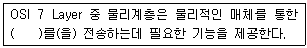
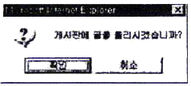

멀티미디어콘텐츠제작전문가(구) (2008-07-27 기출문제)
1과목: 멀티미디어개론
1. 다음 중 전기통신의 개선과 합리적 이용, 전기통신 업무의 이용증대와 효율적 운용, 그리고 세계 전기통신의 균형 있는 발전을 위해 국제간 협력 증진 등 공동 노력을 추구할 목적으로 설립한 기구로 옳은 것은?
- BSI(British Standards Institution)
- ITU(International Telecommunication Union)
- ISO(International Organization for Standardization)
- CEN(Committee European de Normalisation)
(정답률: 알수없음)

2. ( ) 안에 들어갈 적절한 단어는?

- 프로토콜
- 프로그램
- 비트
- 대화제어
(정답률: 알수없음)
3. TCP/IP 프로토콜을 사용하는 응용프로그램으로 다른 호스트에 IP 데이타그램이 도착할 수 있는지를 검사하는데 사용하는 서비스는?
- PING
- Rlogin
- NTP((Network Tme Protocol)
- SNMP(Simple Network Management Protocol)
(정답률: 알수없음)
4. TCP/IP(Transmission Control Protocol Internet Protocol) 프로토콜의 계층 중에서 발신지에 목적지까지 오류제어와 흐름제어를 제공하면서 전체 메시지가 올바른 순서대로 도착하는 것을 보장하는 것은 어느 것인가?
- 물리계층
- 전송계층
- 데이터링크계층
- 네트워크계층
(정답률: 알수없음)
5. IPv6(Internet Protocol ver.6)에 대한 설명으로 거리가 가장 먼 것은?
- 멀티캐스트를 위한 주소공간을 제공한다.
- 유비쿼터스 통신장치들이 상호 통신 할 수 있는 주소공간을 제공한다.
- 64bit의 주소공간을 제공한다.
- 향상된 데이터 보안성을 제공한다.
(정답률: 알수없음)
6. 인터넷에서 전자우편을 교환하기 위한 기능을 제공하는 프로토콜은 어느 것인가?
- FTP(File Transfer Protocol)
- SMTP(Simple Mail Transfer Protocol)
- SNMP(Simple Network Management Protocol)
- Telnet
(정답률: 알수없음)
7. 하이퍼텍스트 시스템의 구성요소인 링크의 종류로 거리가 가장 먼 것은?
- 참조링크(Referential Link)
- 조직링크(Organization Link)
- 키워드 링크(Keyword Link)
- 탐색 링크(Navigation Link)
(정답률: 알수없음)
8. IP 주소 192.1.2.3 이 속하는 클래스는?
- 클래스 A
- 클래스 B
- 클래스 C
- 클래스 D
(정답률: 알수없음)
9. 다음 중 넷스케이프사가 개발한 웹 보안 프로토콜 기술로 웹 뿐만 아니라 FTP와 같은 TCP/IP 어플리케이션에 적용할 수 있는 것은 어느 것인가?
- SSL(Secure Socket Layer)
- SSH(Secure SHell)
- SEA(Simple Encryption Algorithm)
- S-HTTP(Secure Hypertext Transfer Protocol)
(정답률: 알수없음)
10. 다음 용어 중 시스템에 침입한 해커가 다시 침입을 쉽게 하기 위해 만들어 놓은 불법 출입 기능을 무엇이라 하는가?
- 방화벽
- 스파이웨어
- 백도어
- 크래킹
(정답률: 알수없음)
11. 다음 중 정보보호를 위한 암호화에 관련된 용어 설명으로 거리가 가장 먼 것은?
- 평문 - 암호화되기 전의 원본 메시지
- 암호문 - 암호화가 적용된 메시지
- 키(Key) - 적절한 암호화를 위하여 사용하는 값
- 복호화 - 평문을 암호문으로 바꾸는 작업
(정답률: 알수없음)
12. 다음 중 쿠키에 대한 설명으로 거리가 가장 먼 것은?
- 보안상으로 안전하다.
- 사용자의 컴퓨터에 저장된다.
- 일반적으로 4KB 이하의 작은 용량을 갖는다.
- 인터넷 웹사이트와 사용자 사이의 통신을 매개해주는 정보이다.
(정답률: 알수없음)
13. 다음 중 웹을 통해 제공되는 데이터 중 일부 동적 데이터(애니메이션, 비디오)를 보려면 기본적인 웹브라우저로 화면에 표시해주지 못해 특정 소프트웨어가 브라우저상에서 연동되어야 하는데, 이러한 기능을 가진 프로그램을 의미하는 것은?
- 필터링(Filtering)
- 키프레임(Key Frame)
- 모핑(Morphing)
- 플러그인(Plug-in)
(정답률: 알수없음)
14. 이미지의 저장방식 중 래스터방식과 벡터방식을 설명한 것으로 거리가 먼 것은?
- 래스터방식은 이미지를 Pixel 단위로 저장하는 방식으로 이미지를 확대하면 용량이 커지고 해상도도 좋아진다.
- 래스터방식은 색의 변화를 나타내는데 유용하며 자연색상 그대로를 표현하는 좋다.
- 벡터방식은 이동, 회전, 변형이 쉽고 요소의 형태와 칼라에 대한 정보를 기억하나 기억공간을 적게 차지하는 장점이 있다.
- 벡터방식은 수학적으로 기술되어 화면에 보여주는 속도가 느리고 점진적인 색변화를 나타내는데 어려움이 있다.
(정답률: 알수없음)
15. 다음 중 동영상의 끊김없이 지속적으로 전송 처리하는 기술로 수신자에게 전송된 일부만으로도 재생 가능한 기술을 무엇이라고 하는가?
- 스트리밍
- 푸시
- 쿠키
- 다중화
(정답률: 알수없음)
16. 사운드를 디지털화 하는데 널리 사용되는 방법으로 연속적으로 변화하는 아날로그 신호의 강도를 주기적으로 조사하여 변조하는 방식은?
- OCM 방식
- PCM 방식
- PCR 방식
- OCR 방식
(정답률: 알수없음)
17. 애니메이션 특수효과 중 2개의 서로 다른 이미지나 3차원 모델 사이에 점진적으로 변화해 가는 모습을 보여주는 것을 무엇이라 하는가?
- 로토스코핑(Rotoscoping)
- 모핑(Morphing)
- 미립자 시스템(Particle System)
- 양파껍질 효과(Onion-Skinning)
(정답률: 알수없음)
18. 오디오 또는 비디오 데이터의 압축과 복원기능을 수행하는 하드웨어나 소프트웨어를 가리키는 용어로 적절한 것은?
- 코덱(CODEC)
- 스트리밍(Streaming)
- 캡처 보드(Capture Board)
- 슈퍼임포즈(Super impose)
(정답률: 알수없음)
19. 디지털 TV 특징에 대한 설명으로 거리가 가장 먼 것은?
- 한정 수신과 스크램블 기능을 제공할 수 있다.
- 잡신호가 없어 선명한 화질과 음질을 제공한다.
- 방송국 및 전송 설비에 대한 비용 부담이 적다.
- 한 대역폭에 4개 이상의 프로그램을 송출할 수 있다.
(정답률: 알수없음)
20. 다음 중 모니터에 대한 설명으로 거리가 가장 먼 것은?
- 모니터는 Red, Green, Blue의 3색 형광물질을 방사하는 감법혼합을 이용한다.
- 1초 동안에 CRT 좌측에서 우측까지 전자빔이 주사되는 횟수를 수평 주파수라고 한다.
- 상단에서 하단까지 주사가 모두 끝났을 때, 하단의 주사선을 다시 상단으로 옮기는 횟수를 수직 주파수라고 한다.
- 화소의 크기가 작을수록, 화소 내의 형광 입자간의 거리가 가까울수록 해상도는 높아진다.
(정답률: 알수없음)
21. 다음 일반적인 만화영화와 같은 원화, 동화와 배경을 분리시켜 만드는 애니메이션 방법은?
- 셀 애니메이션
- 플립 북 애니메이션
- 스프라이트 애니메이션
- 벡터 애니메이션
(정답률: 알수없음)
22. 다음 중 가상현실을 구성하는 요소와 거리가 가장 먼 것은?
- 몰입
- 정체감
- 상호작용
- 자율성
(정답률: 알수없음)
23. 다음 중 입력 장치로 거리가 가장 먼 것은?
- 마우스
- 터치스크린
- 키보드
- 프린터
(정답률: 알수없음)
24. 디지털 TV 방송은 전송방식의 표준규격에 따라 구분할 수 있다. 다음 중 디지털TV 전송 방식으로 거리가 먼 것은?
- 미국방식(ATSC)
- 유럽방식(DVB)
- 호주방식(OCAP)
- 일본방식(ISDB)
(정답률: 알수없음)
25. 최근 멀티미디어 기술 동향이 아닌 것은?
- 하드웨어 장치의 소형화
- 하드웨어 성능의 고속화
- 멀티미디어 시스템의 고가격화
- 멀티미디어 정보의 표준화
(정답률: 알수없음)
2과목: 멀티미디어기획및디자인
26. 디자인이 기본 조건으로 거리가 가장 먼 것은?
- 경제성
- 심미성
- 일관성
- 합목적성
(정답률: 알수없음)
27. 디자인의 기본요소에 속하지 않는 것은 무엇인가?
- 점
- 원
- 면
- 입체
(정답률: 알수없음)
28. “디자인의 핵심적인 요소로서 시각적 구성요소들을 조합하여 상호간 기능적으로 배치, 배열하는 작업으로 포맷, 라인업, 마진 문자가 이에 속하는 편집디자인의 구성요소는?
- 타이포그래피
- 레이아웃
- 일러스트레이션
- 인쇄기법
(정답률: 알수없음)
29. 다음 중 디자인의 시각 요소에 속하지 않는 것은?
- 모양(Shape)
- 크기(Size)
- 비례(Proportion)
- 배경(Background)
(정답률: 알수없음)
30. 디자인 원리 중 반복, 강조, 점이 등을 통해 이어지는 것은 무엇인가?
- 조화
- 균형
- 대비
- 율동
(정답률: 알수없음)
31. 디자인의 원리 중 symmetry에 관한 설명으로 옳은 것은?
- 자연물 등의 대칭된 형태에서 느낄 수 있다.
- 길이의 비례 관계를 말한다.
- 하나의 직선이나 곡선 또는 단순형태에서는 느낄 수 없다.
- 변화 속에서 통일감을 얻는다.
(정답률: 알수없음)
32. 게슈탈트의 심리법칙 중 거리가 가까운 요소끼리 하나의 묶음으로 보이는 것을 무엇이라고 하는가?
- 폐쇄성의 원리
- 연속성의 원리
- 유사성의 원리
- 근접성의 원리
(정답률: 알수없음)
33. '현재 또는 잠재적인 소비자에게 욕구를 충족시켜주는 제품 및 서비스에 대해 계획하고, 가격을 결정하여, 판촉 활동을 하고, 배포하도록 계획된 경영활동의 전반적인 체계를 무엇이라 하는가?
- 시장조사
- 리서치
- 기획
- 마케팅
(정답률: 알수없음)
34. 시나리오의 구성 형식 중 직선식 구성에 대한 설명으로 가장 올바른 것은?
- 주로 추리극이나 싸이코 드라마에서 볼 수 있는 구성이다.
- 이야기의 전개가 처음 사건이 다음 사건의 원인이 되고, 다시 두 번째 사건이 다음 사건의 원인이 되는 형식으로 이루어진다.
- 첫 번째 이야기의 전개 중 세 번째 이야기가 나오고, 다시 세 번째 이야기의 전개 중 첫 번째 이야기가 나오는 구성을 보인다.
- 이야기 구성이 순서가 정해져 있지 않고 즉흥적으로 이루어진다.
(정답률: 알수없음)
35. 멀티미디어 시나리오 테마 결정시 구성되는 표현 중 가장 거리가 먼 것은?
- 표현의 간결성
- 표현의 친밀성
- 표현의 주체성
- 표현의 추상성
(정답률: 알수없음)
36. 멀티미디어 프로젝트 참여를 위한 기획서를 제작할 때 가장 주의할 점은?
- 고객의 요구사항 파악
- 기획서의 파일 종류
- 새로운 기술 제시
- 계약 기간
(정답률: 알수없음)
37. 인터페이스 디자인을 위한 조형 원리에 포함되지 않는 것은?
- 통일감
- 조화
- 절제
- 균형
(정답률: 알수없음)
38. 인터페이스 디자인에서 중요한 정보를 돋보이게 하는 방법으로 적절하지 않은 것은?
- 깜박임(Flashing)
- 애니메이션(Animation)
- 밑줄(Underling)
- 흐리게 하기(Blur)
(정답률: 알수없음)
39. 문자를 이용한 디자인으로 간격, 크기, 색상, 서체 등의 다양한 변화에 의해 가독성이나 판독성 등을 높이는 것을 무엇이라고 하는가?
- 아웃라인
- 일러스트레이션
- 그리드
- 타이포그래피
(정답률: 알수없음)
40. 글자디자인의 기본 조건으로 거리가 가장 먼 것은?
- 개성이 있어야 한다.
- 잘 읽을 수 있어야 한다.
- 현대적인 성격만을 표현해야 한다.
- 쓰임새에 따라 디자인되어야 한다.
(정답률: 알수없음)
41. 다음 중 선의 끝과 시작, 선들이 만나거나 교차하는 곳 등에 있고 공간에서 위치를 정의하고 결정하는 것은?
- 점
- 선
- 면
- 형태
(정답률: 알수없음)
42. 색의 3가지 속성이 아닌 것은?
- 대비
- 명도
- 채도
- 색상
(정답률: 알수없음)
43. 자극으로 인해 색 지각이 생긴 후 그 자극이 없어져도 그전의 상이나 그 반대의 상을 느낄 수 있는 것을 무엇이라고 하는가?
- 주목성
- 잔상
- 동화
- 명시도
(정답률: 알수없음)
44. 다음 중 팔레트를 사용하는 것과 같이 제한된 수의 색상을 사용해야 할 경우, 그 제한된 색상들을 섞어서 다양한 색상을 만들어 내는 것이다. 즉 현재 팔레트에 존재하지 않는 컬러를 컬러패턴으로 대체하여 가장 유사한 컬러로 표현하는 기법에 해당하는 용어는?
- 디더링(Dithering)
- 컬러 조정(Color Adjustment)
- 메타포(Metaphor)
- 컬러 변화(Color Variation)
(정답률: 알수없음)
45. 다음 중 GIF에 대한 설명으로 가장 거리가 먼 것은?
- Compuserve사에서 온라인을 이용한 이미지 파일 전송을 목적으로 개발하였다.
- 애니메이션 기능을 지원한다.
- 투명색을 지원한다.
- 실사와 같은 색상 표현이 가능하다.
(정답률: 알수없음)
46. 형태의 시각요소인 '선(line)'에 대한 설명으로 거리가 가장 먼 것은?
- 물체와 관찰자의 거리가 멀어질 경우, 물체는 선으로 인식된다.
- 가시적인 선은 형이나 형태, 물체, 구조물을 표현하는데 이용될 수 있다.
- 선은 의미와 상징성을 전달하고, 시각적 형상을 표현하며, 메시지를 전달 할 수 있다.
- 선은 형태를 표현하고 창조하는데 필수적인 요소이다.
(정답률: 알수없음)
47. 다음 중 가법혼색의 3원색이 아닌 것은?
- Yellow
- Red
- Green
- Blue
(정답률: 알수없음)
48. 다음 중 가법혼색의 RGB 세 가지 색상을 혼합 시 나타나는 컬러를 웹 컬러 숫자(Web Color Number)로 바르게 표현한 것은?
- #FFFFFF
- #000000
- #999999
- #333333
(정답률: 알수없음)
49. 스토리보드의 표현 단위는?
- 타임라인(Timeline)
- 픽셀(Pixel)
- 파이카(Pica)
- 프레임(Frame)
(정답률: 알수없음)
50. 웹 콘텐츠 제작 시 이미지 파일이나 애니메이션 파일 용량을 줄일 수 있도록 256가지 이하의 색상으로 이미지를 표현하는 모드를 무엇이라고 하는가?
- Indexed color모드
- JPG모드
- CMYK모드
- RGB모드
(정답률: 알수없음)
3과목: 멀티미디어저작
51. DBMS는 여러 사용자들에 의해 효과적으로 사용되기 위해서 필수적으로 제공하는 기능이 아닌 것은?
- 정의 기능
- 조작 기능
- 제어 기능
- 연산 기능
(정답률: 알수없음)
52. 데이터베이스의 장점이 아닌 것은?
- 무결성 제거
- 중복성 제거
- 불일치성 제거
- 데이터 공유
(정답률: 알수없음)
53. 사용자 A의 자료를 사용자 B가 보던 중 실수로 수정 또는 삭제를 해버렸다. 이러한 문제점이 발생할 수 있는 이유로 가장 타당한 데이터베이스 관리 시스템의 특징은 어느 것인가?
- 자료의 공유
- 중복의 최소화
- 데이터 무결성 유지
- 데이터 관리의 표준화
(정답률: 알수없음)
54. 관계형 데이터 모델에서 속성이 최소 단위라면, 최소의 관리 또는 조직 단위를 무엇이라 하는가?
- 튜플
- 레코드
- 릴레이션
- 원자값
(정답률: 알수없음)
55. 다음 중 mysql_querry함수로 가져온 결과값을 한줄 배열로 만들어서 출력하려고 한다. 이 때 PHP에서 사용되는 MySQL함수는 무엇인가?
- mysql_connect();
- mysql_select_db();
- mysql_num_rows();
- mysql_fetch_array();
(정답률: 알수없음)
56. HTML 태그에서 cell spacing에 대한 설명 중 가장 적절한 것은?
- 표에는 거의 사용되지 않는다.
- 일반적으로 초기값이0이 할당된다.
- 두 셀 사이의 여백 크기를 지정한다.
- 셀 가장자리와 셀 내용 사이의 여백을 지정한다.
(정답률: 알수없음)
57. 이미지를 인식하지 못하는 브라우저나 이미지 보기 옵션이 꺼져 있을 경우 이미지 대신 텍스트를 넣어서 그 이미지가 무엇인지 알 수 있도록 해 주는 태그는?
- PRE
- ALT
- ALIGN
- UL
(정답률: 알수없음)
58. XML의 문서 형식 정의(DTD)에서 사용하는 세 가지 주요 구성 요소가 아닌 것은?
- element
- comment
- Attribute
- entity
(정답률: 알수없음)
59. W3C는 XML의 10가지 목표를 권고하고 있다. 그중에 속하지 않는 것은?
- 플랫폼에 종속적이어야 한다.
- 다양한 응용프로그램을 지원해야 한다.
- XML은 SGML과 호환성을 제공한다.
- XML 문서는 쉽게 만들 수 있어야 한다.
(정답률: 알수없음)
60. 현재 브라우저에 열려있는 HTML 문서의 URL에 관한 각종 정보를 제공하는 객체는?
- History 객체
- Image 객체
- Link 객체
- Location 객체
(정답률: 알수없음)
61. 하이퍼미디어 시스템에서 정보를 저장하는 기본적인 단위는?
- 프레임(Frame)
- 해상도(Resolution)
- 픽셀(Pixel)
- 노드(Node)
(정답률: 알수없음)
62. sed, awk, tr등과 같은 유닉스 기능을 포함하는 스크립트 프로그래밍언어이며, 래리 월(LarryWall)이 1987년 개발한 언어로 텍스트 처리 기능이 뛰어나 CGI 프로그램을 개발하는데 많이 사용되는 언어는?
- Prel
- Cobol
- Basic
- Powerbuilder
(정답률: 알수없음)
63. 플래시에서 인터랙티브 버튼을 제작할 경우 나타나는 프레임이 아닌 것은?
- Up
- Over
- Put
- Down
(정답률: 알수없음)
64. 플래시에 긴 배경 음악을 삽입하려고 한다. 사운드 방식은 무엇으로 선택해야 하는가?
- event
- start
- stop
- stream
(정답률: 알수없음)
65. 다음 중 매 프레임마다 반복적으로 액션스크립트를 실행시켜야 할 이벤트로 옳은 것은?
- everyframe
- load
- data
- enterframe
(정답률: 알수없음)
66. 멀티미디어 콘텐츠 제작 시 작업환경에서 보이는 그대로 결과물을 도출해내는 방식을 무엇이라고 하는가?
- WYSIWYG
- GUI
- HCI
- MCP
(정답률: 알수없음)
67. 다음 중 정지 영상의 국제 표준 압축 방식은?
- MIDI
- WAV
- JPEG
- MPEG
(정답률: 알수없음)
68. 컴퓨터 음악기기의 인터페이스 방법으로 음악 합성기, 디지털 피아노 등의 전자 음악기기들을 컴퓨터에 연결하여 제어하고 관리하는 표준 인터페이스는 무엇인가?
- WAV
- MIDI
- MP3
- RA
(정답률: 알수없음)
69. 효과적인 정보의 전달을 위하여 그래픽, 애니메이션, 사운드, 텍스트로 구현하는 영상의 통합된 형태를 무엇 이라 하는가?
- 공장 자동화
- 사무 자동화
- 정보 자동화
- 멀티미디어
(정답률: 알수없음)
70. 다음 중 가상현실(Virtual Reality)을 가장 올바르게 설명한 것은?
- 2차원 그래픽을 컴퓨터에 나타내는 기술이다.
- 2차원의 복잡한 데이터를 단순화하여 컴퓨터 화면에 나타내는 기술이다.
- 컴퓨터가 만들어낸 영상을 다양한 감각과 다양한 구도를 이용해 현실 세계와 유사하도록 컴퓨터 그래픽을 통해 표현하는 기술이다.
- 가상현실을 구현해주는 대표적3차원 그래픽 프로그램인 페인트샵을 사용한다.
(정답률: 알수없음)
71. 시간축 방식(Time-line) 저작도구에 대해 가장 올바르게 설명한 것은?
- 텍스트가 중심이 되는 경우에 적절하다.
- 하나의 연속된 장면의 경우 미디어 정보를 시간축에 따라 배치한다.
- 프로그램의 흐름을 플로차트 형태의 창으로 보여준다.
- 모든 정보를 카드 단위로 표시하며 여러 개의 카드 묶음은 스택(Stack)으로 정의된다.
(정답률: 알수없음)
72. 자바스크립트에서 Document에 포함된 객체 중 HTML 문서 안에 있는 ＜A NAME＞ 태그에 관한 정보를 배열로 포함하고 있는 객체는?
- Applet 객체
- Anchor 객체
- Link 객체
- Form 객체
(정답률: 알수없음)
73. 자바스크립트의 Window 객체 중 다음 그림과 같이 다이얼로그 박스를 나타내는 메소드는?

- Open( )
- Prompt( )
- Alert( )
- Confirm( )
(정답률: 알수없음)
74. 다음 중 자바스크립트 상에서 예외 상황을 처리하기 위해 사용하는 것으로서 아무것도 없다는 의미를 갖는 것은 무엇인가?
- Null
- VAR
- String
- Boolean
(정답률: 알수없음)
75. 자바스크립트(JavaScript)에서 두 개의 배열을 하나의 배열로 만들 때 사용되는 메소드(Method)는?
- concat()
- slice()
- sort()
- deleteRow()
(정답률: 알수없음)
4과목: 멀티미디어제작기술
76. 대역폭이 적은 통신매체에서도 전송이 가능하고 양방향 멀티미디어를 구현할 수 있는 A/V(Audio/ Video)표준 부호화 방식으로, 64kbps 급의 초저속 고압축율 실현을 목적으로 하는 동영상 표준안은?
- MPEG-1
- MPEG-2
- MPEG-4
- MPEG-7
(정답률: 알수없음)
77. 비디오 압축 기술 중 MPEG-2 방식의 설명이 잘못된 것은?
- HDTV 전송의 표준을 포함하고 있다.
- 목표 전송률은 1.5 Mbits/sec 이하이다.
- 표준을 따르는 MPEG-2 디코더는 MPEG-1 스트림도 재생할 수 있다.
- 순차주사(Noninterlace)방식과 격행주사 (Interlace)방식 모두를 지원하다.
(정답률: 알수없음)
78. 다음 중 MP3에 대한 설명으로 적절한 것은?
- MPEG-1의 Audio Layer-3을 의미한다.
- 가청주파수를 10개의 서브밴드로 나누어 압축한다.
- 무손실 압축기법을 사용한다.
- 압축율이 약 3:1 정도이다.
(정답률: 알수없음)
79. 물체 경계면의 픽셀을 물체의 색상과 배경의 색상을 혼합해서 표현하여 경계면이 부드럽게 보이도록 하는 기법은?
- 투영(Projection)
- 디더링(Dithering)
- 모델링(Modeling)
- 앤티앨리어싱(Antialiasing)
(정답률: 알수없음)
80. 1996년 Intel 사가 만든 멀티미디어 파일 포맷으로 파일 안에 오디오, 비디오, 이미지, URL 등을 이용할 수 있으며, 스트리밍 기술을 이용하여 다운로드와 동시에 재생이 가능한 파일 형태는?
- AVI
- ASF
- JPEG
- WAV
(정답률: 알수없음)
81. 32비트 컬러에서는 트루컬러 외에 투명도를 나타낼 수 있는 채널이 있다. 이를 무엇이라 하는가?
- 알파 채널
- 베타 채널
- 감마 채널
- 델타 채널
(정답률: 알수없음)
82. 양자화(Quantization)하는 샘플 비트(Sample Bit)가 8비트인 경우 소리의 강약을 몇 단계로 나누어 표시할 수 있는가?
- 8
- 64
- 265
- 512
(정답률: 알수없음)
83. 모니터의 컬러 또는 프로그램에서 지원하는 컬러와 출력이나 인쇄했을 때의 컬러가 일치하지 않을 때 여러 시험을 통해 일치하도록 조절하는 작업을 무엇이라 하는가?
- 디더링(dithering)
- 앨리어싱(aliasing)
- 인덱스컬러(index color)
- 칼리브레이션(calibration)
(정답률: 알수없음)
84. 다음 중 비선형편집(Non-Linear Editing)의 장점으로 볼 수 없는 것은?
- 어떤 것의 길이라도 신속하게 실행 할 수 있다.
- 편집 내용을 수정하거나 변경하는 것이 자유롭다.
- 기존 CG 및 다른 특수 효과 프로그램들 간의 호환으로 원활한 작업이 가능하다.
- 최초에 소스를 저장하기 위한 복사작업 및 저장 공간이 필요하다.
(정답률: 알수없음)
85. 영상편집 기술 중 화면과 화면의 전환을 의미하는 것은?
- Transparency
- Transition
- Superimpose
- Filtering
(정답률: 알수없음)
86. 디지털 영상에서 행과 열의 값으로 영상의 한 점을 표시하는 것을 무엇이라 하는가?
- 프레임(frame)
- 픽셀(pixel)
- 블록(block)
- 필드(field)
(정답률: 알수없음)
87. 디지털영상에서 발생하는 Jag를 바르게 설명한 것은?
- 계단형 화질 왜곡현상
- 복사에 의한 화질의 열화
- 압축에 의한 정보량 축소
- 잡음(noise)에 대한 강한 면역성
(정답률: 알수없음)
88. 다음 중 영상의 색 밝기 차이(밝고 어두운 정도)를 이용한 디지털 합성기술로, 한 영상의 어두운 부분을 없애거나 투명하게 만들어서 다른 쪽 영상이 비치게 할 수 있다. 영상 편집에서 뿐 아니라, 영상믹서를 이용한 실시간 방송에도 사용할 수 있는 합성 기술은?
- Beta Channel
- Luminance Key
- Rendering
- Morphing
(정답률: 알수없음)
89. 비디오 영상이 컴퓨터 영상을 통과하여 보이게 하는 것처럼 투명하게 되도록 컬러나 컬러의 범위로서 그 컬러의 위치에 다른 영상의 삽입이 가능하게 한 것을 무엇이라 하는가?
- 렌더링(rendering)
- 크로마 키(chroma key)
- 트위닝(tweening)
- 쉐이딩(shading)
(정답률: 알수없음)
90. 영상을 어두운 색 또는 밝은 색으로 점차로 나타나거나 점차로 사라지는 장면전환 기법은?
- 프레임 인(Frame In)
- 로토스코핑(Rotoscoping)
- 페이트 인/아웃(Fade In/Out)
- 아이리스 효과(Iris Effect)
(정답률: 알수없음)
91. 사운드의 기본 요소가 아닌 것은?
- 진폭
- 주파수
- 위상
- 음색
(정답률: 알수없음)
92. 다음 디지털 사운드 압축방식 중 사람과 사람이 대화할 때 단어 사이의 공백은 디지털 데이터로 전송할 필요가 없다는 것을 활용하여 음성의 실시간 전송을 위해 만들어진 방식은 무엇인가?
- A-Law
- MP3
- ADPCM
- TrueSpeech
(정답률: 알수없음)
93. 다음 중 일반적으로 오디오 CD음질에 해당하는 디지털 오디오 샘플링 사이즈와 샘플링 주파수 규격은?
- 16bit, 44.1kHz
- 16bit, 48kHz
- 24bit, 96kHz
- 24bit, 192kHz
(정답률: 알수없음)
94. 아날로그 사운드를 디지털 형태로 바꾸는 과정 중 표본화(Sampling)에 대한 설명으로 거리가 가장 먼 것은?
- 표본화를 많이 할수록 원음을 잘 표현할 수 있다.
- 표본화에서 Hz는 10분에 주기가 몇 번 있는가를 의미한다.
- 표본화를 많이 할수록 데이터 저장을 위한 공간이 증가한다.
- 아날로그 파형을 디지털 형태로 변환하기 위해 표본을 취하는 것이다.
(정답률: 알수없음)
95. 애니메이션 기법 중에 대상물의 움직임을 시작 단계와 끝 단계를 기준으로, 중간 단계를 생성하는 방식을 무엇이라고 하는가?
- 스톱모션 방식
- 키프레임 방식
- 로토스코핑
- 스타트스톱 방식
(정답률: 알수없음)
96. 애니메이션을 제작하는데 있어서 애니메이터는 장면이 변화하는 키 프레임(Key Frame)만을 제작하고, 중간에 속해있는 프레임들은 컴퓨터가 자동으로 생성하는 기법을 무엇이라 하는가?
- 트위닝(Tweening)
- 플립북 애니메이션(Flip-book Animation)
- 셀 애니메이션(Cell Animation)
- 스프라이트 애니메이션(Sprite-based Animation)
(정답률: 알수없음)
97. 다음 중 사람의 가청 주파수 영역에 해당하는 것은?
- 20Hz ~ 20kHz
- 50Hz ~ 5kHz
- 45Hz ~ 45kHz
- 30Hz ~ 30kHz
(정답률: 알수없음)
98. 디지털 카메라의 성능을 결정하는 중요한 요소로서 촬영된 사진의 해상도나 화질을 결정하는 것은?
- 메모리
- 플래시
- CCD
- LCD
(정답률: 알수없음)
99. CMY 모델에 대한 설명으로 거리가 가장 먼 것은?
- Cyan, Magenta, Yellow가기본이 된다.
- 가산 모델(Additive Model)이라고 한다.
- 인쇄 등 물감이나 잉크 등의 특성을 이용하는 곳에 유용하게 쓰인다.
- 컬러 모델을 나타내는3차원 좌표축에서 원점 (0,0,0)은 검은색을 나타낸다.
(정답률: 알수없음)
100. 기억용량 단위의 크기 순서로 옳은 것은?
- Bit ＜ Byte ＜ MB ＜ TB ＜ KB ＜ GB
- Bit ＜ Byte ＜ MB ＜ GB ＜ KB ＜ TB
- Bit ＜ Byte ＜ KB ＜ MB ＜ GB ＜ TB
- Byte ＜ Bit ＜ KB ＜ MB ＜ GB ＜ TB
(정답률: 알수없음)